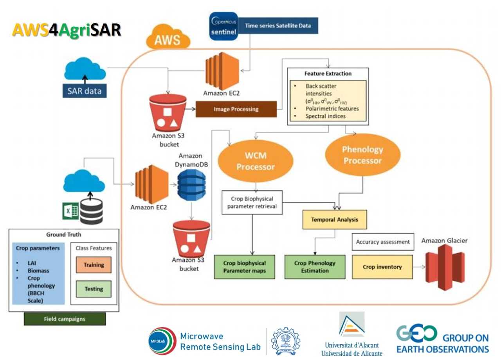

MRSLab bagged the Amazon Cloud Grants within the GEO framework
The Group on Earth Observations (GEO) announced the winners for the Amazon Cloud Grants to improve understanding of our planet. The research idea of MRSLab from CSRE, Indian Institute of Technology Bombay is selected from the 21 projects from 17 developing countries that will be awarded $1.5 million USD worth of cloud services, grants and technical support through the Earth Observation Cloud Credits Programme.
MRSLab, IIT Bombay along with the researchers from the SST Group of IUII, Universidad de Alicante, Spain has focused their interest on the Crop inventory mapping from SAR data on cloud computing platform (AWS4AgriSAR).
Operational monitoring of agricultural crops benefits from Earth Observation (EO) data with high temporal revisit and extended spatial coverage. Mr. Dipankar Mandal, a doctoral student in MRSLab, said, “Frequent satellite revisit is necessary to monitor critical phenological stages throughout the crop season”. In this context, the recently launched C-band Sentinel-1 SAR constellation offers global high-resolution imagery at an unprecedented spatial and temporal resolution. “Such a configuration meets EO requirements for global agricultural monitoring. Sentinel-1A and 1B provide 6-day temporal repeat data which could contribute significantly to the monitoring of crop dynamics”, added by Mr. Vineet Kumar, doctoral student in MRSLab, IITBombay.
Prof. Avik Bhattacharya (MRSLab) pointed out the difficulties in the processing of dense time series of Sentinel-1 like data for operational purposes which would be constrained by computational challenges due to such a high volume of data. Even for regional-scale monitoring, the SAR research community is challenged in its handling of the amount of data delivered from these operational missions. As a result, several space agencies have initiated the adoption of commercial cloud computing platforms. These platforms are being explored as a way to archive and disseminate large volumes of data, efficiently. For example, Sentinel-1 data are available on Google Earth Engine (GEE) clouds as well as Amazon Web Services (AWS), and the data are regularly synchronized with the Sentinel Open Hub, added by Prof. Juan M. Lopez-Sanchez, Co-PI in this project from University of Alicante, Spain.
In a cloud-based system such as AWS, users can fetch and process high volumes of SAR data directly in the cloud, instead of downloading and processing in a local system. Data processing can be performed in parallel on AWS’s computational infrastructure, dramatically improving processing efficiency, and opening up valuable opportunities for end users
Prof. Avik Bhattacharya, PI of AWS4AgriSAR project indicated the goal of the proposed project as to evaluate the potential and transferability of the crop inventory development from a point scale to a regional test site with PolSAR data in AWS’s processing chain. The collaborative research (MRSLAB, IIT Bombay and SST Group, University of Alicante, Spain) focuses on operational exploitation of SAR data to produce a high-resolution crop specific maps as value-added products.
These crop inventories can be used either directly or through assimilation into yield models to estimate grain yield. Furthermore, crop monitoring with an operation context using the European Space Agency’s Sentinel-1 SAR system and the upcoming SAR missions like Radarsat Constellation Mission (RCM), NASA-ISRO SAR (NISAR) mission, RISAT-1A/B have immense potential to accurately monitor crop dynamics in terms of the retrieved crop parameters.